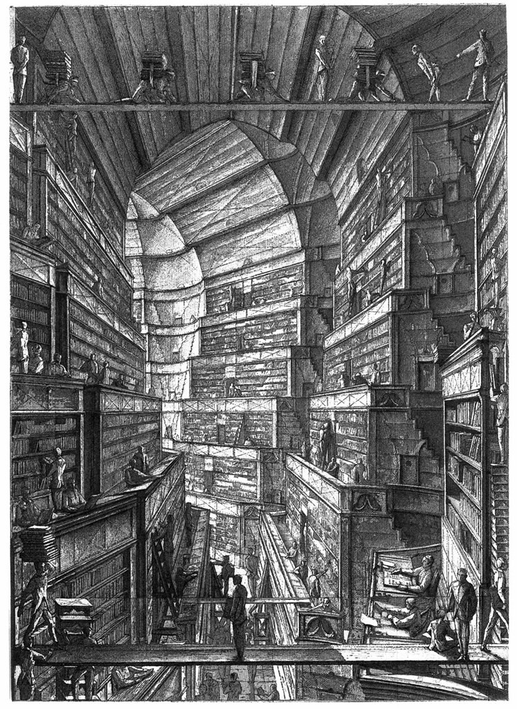
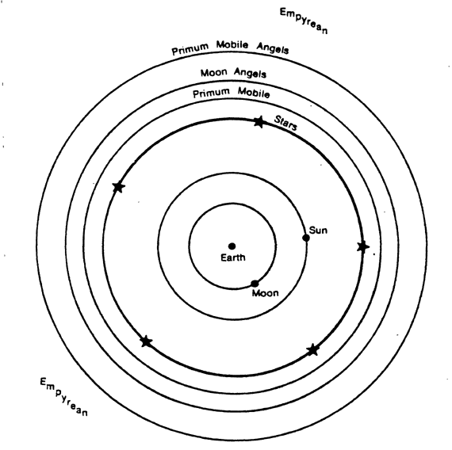

read the text multiple times, interpret it from all angles.
What is the subject matter in your own words?
Consider the tone, syntax, word choices, sentence and paragraph length, rhythm...
What images or associations does it bring up?
Is it visual, metaphoric, descriptive, are there a lot of nouns or adjectives?
Is it sparse, dense or in between?
Subject matter: infinity & the universe
Tone: mysterious, poetic, logical, fatalistic, profound, timeless. Paragraphs' lengths vary.
The library. The universe. The infinity symbol. White and blank spaces. Gibberish. A circle.
Metaphoric and descriptive. This narritive is very logical and analytical.
Of all your findings, what do you want to point out to the reader about this text in your designed interpretation?
How might you do it?
-
I want to emphasize the anology made between the libiary and the universe. Also the notion of infinity and a sense of insignificance.
I'm thinking utilizing the circle to illustrate infinity and the galaxy (I might change the pointer in the shape of a star.)
I also like the random gibberish hover effect on the Library of Babal so I might also use that.
I plan to also use the notion of books/bookshlves/hoxegon
Create a list of 10 or more words, phrases, ideas that describe your text.
Infinity
Labyrinth
Analogous to the view of the universe as a sphere having its center everywhere and its circumference nowhere.
"Infinite monkey theorem": a monkey hitting keys at random on a typewriter keyboard for an infinite amount of time will almost surely type any given text, such as the complete works of William Shakespeare.
In fact, the monkey would almost surely type every possible finite text an infinite number of times.
Order vs disorder
- 
http://art.teleportacia.org/exhibition/stellastar/poehali.html#onskazal
- 